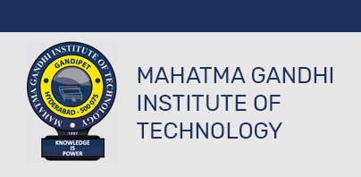

Academics @ MGIT
MGIT offers 4 years Undergraduate Programme in Engineering Education (B.Tech), a 2 years Postgraduate Programme in Engineering Education (M.Tech).
Six UG programmes ( CSE,ECE,EEE,IT,MCT,MMT) have been Accredited by NBA-AICTE,New Delhi.
Minor Program Offerings :
Artificial Intelligence & Machine Learning
- Eligible Branches: All except B. Tech. in CSE (AI&ML) /B. Tech. (AI&ML)/ B. Tech. (AI)/ B. Tech. CSE(AI)
- Offering Department: CSE
- Award of Degree: “B. Tech. in branch name with Minor in Artificial Intelligence & Machine Learning”
Cyber Security
- Eligible Branches: All except B. Tech. in CSE (Cyber Security)/ B. Tech. (Cyber Security)
- Offering Department: CSE
- Award of Degree: “B. Tech. in branch name with Minor in Cyber Security”
Data Science
- Eligible Branches: All except B. Tech. in CSE (Data Science)/ B. Tech. (Data Science)
- Offering Department: CSE
- Award of Degree: “B. Tech. in branch name with Minor in Data Science”
IOT
- Eligible Branches: All except B. Tech. in CSE (IOT) / B. Tech. (IOT)
- Offering Department: ECE
- Award of Degree: “B. Tech. in branch name with Minor in IOT”
Innovation and Entrepreneurship
- Eligible Branches: All branches
- Offering Department: Management Science / MBA
- Award of Degree: “B. Tech. in branch name with Minor in Innovation and Entrepreneurship”
MGIT Exchange program:
By collaborating with UT Dallas, a prestigious research university, we aim to offer our students endless possibilities for educational growth,
paving the way for them to advance in their careers,
with UT Dallas offering specialized certification courses in Cyber Security, Nano Science & Technology, and other emerging fields.
Students from all engineering streams can expand their skill sets and enhance their career prospects.
Clubs @ MGIT
MGIT Club Culture is a precious part of the diverse life on campus,where the individual talent grows and where the leadership and inclusiveness
get literally practiced and encouraged through the practicing sessions, club meetings and concert performances.
Music Club, Literary club, Dance club, Drama & Film Making club, Arts Club, Photography Club, Technology club are present in MGIT level.
There are also departmental level clubs for every department at MGIT.
Alumuni @ MGIT
MGIT has many notable alumini. Some of them are:
- Ms.Adapa Pranusha, Assistant Executive Engineer, Department of Mission Bhagireetha.
- Mr.Neehar Cheerabuddi, writer and director of film BROKEN(2010) & Green Bandits(2013).
- Ms.Saritha Kommati, established 2 businesses, Keminds IT solutions, Nythani Enterprises in last 10 years.
- Mr.Arjun Reddy, Co-founder of A-Cube whose subsidiaries include SuperBaby, GrowYourStaff.
- Mr. M. Krishna Koundinya is currently the Under Secretary, GST Council Secretariat, Government of India.
MGIT arranges frequent guest lectures featuring its alumni, facilitating students' exposure to industry insights and allowing them
to benefit from the experience of their predecessors. Additionally, the annual "Reminiscence" event serves as a platform for MGIT alumni
to return to the college, enabling students to establish valuable connections and fostering networking opportunities.